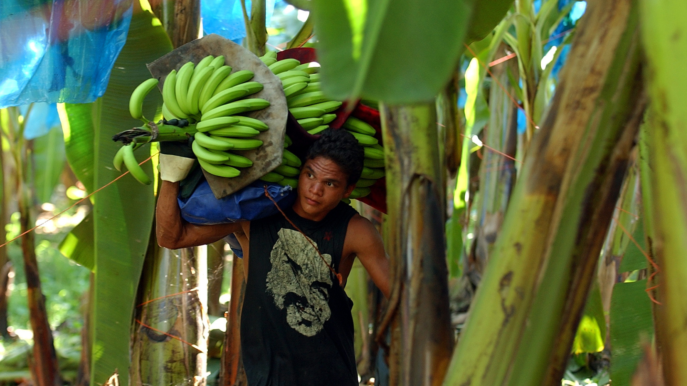
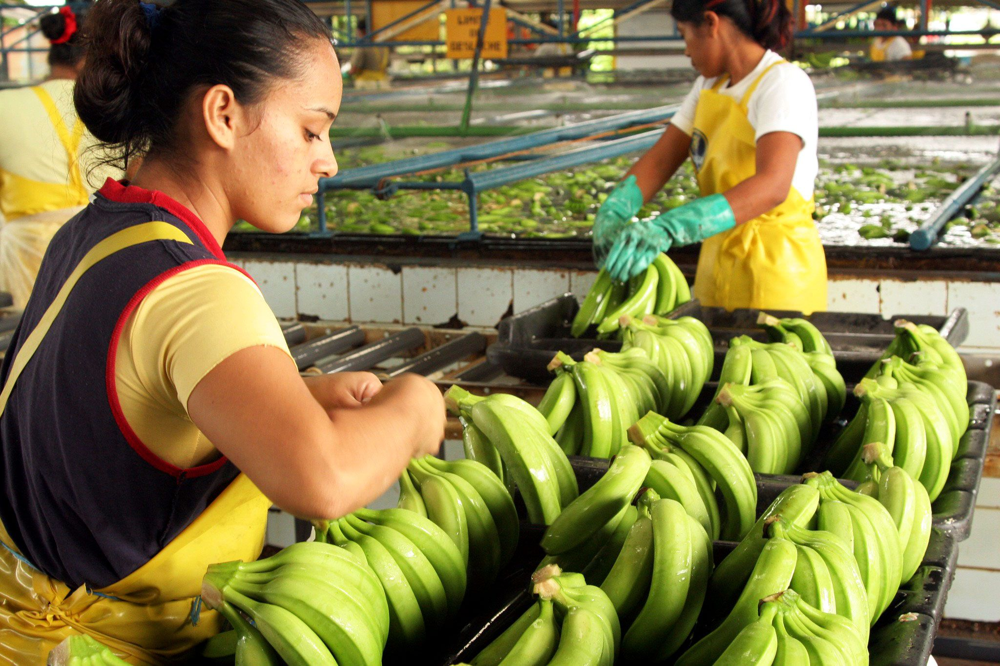
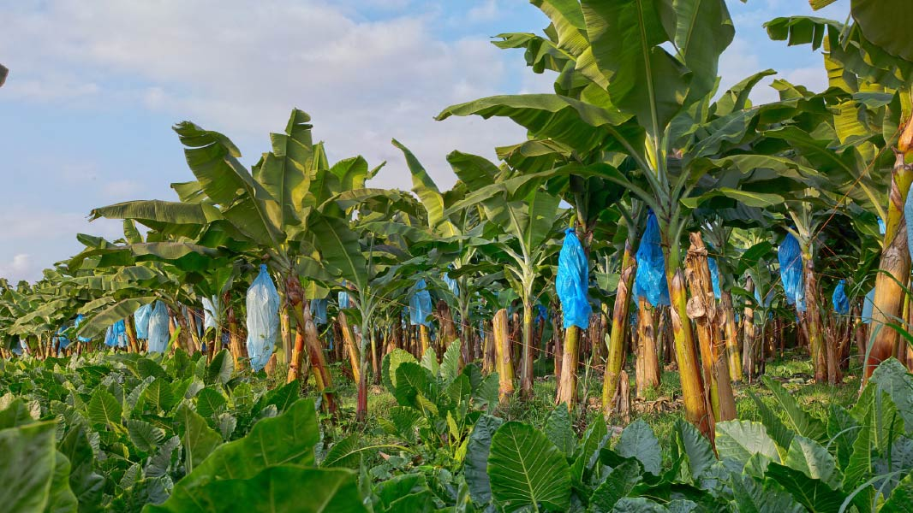
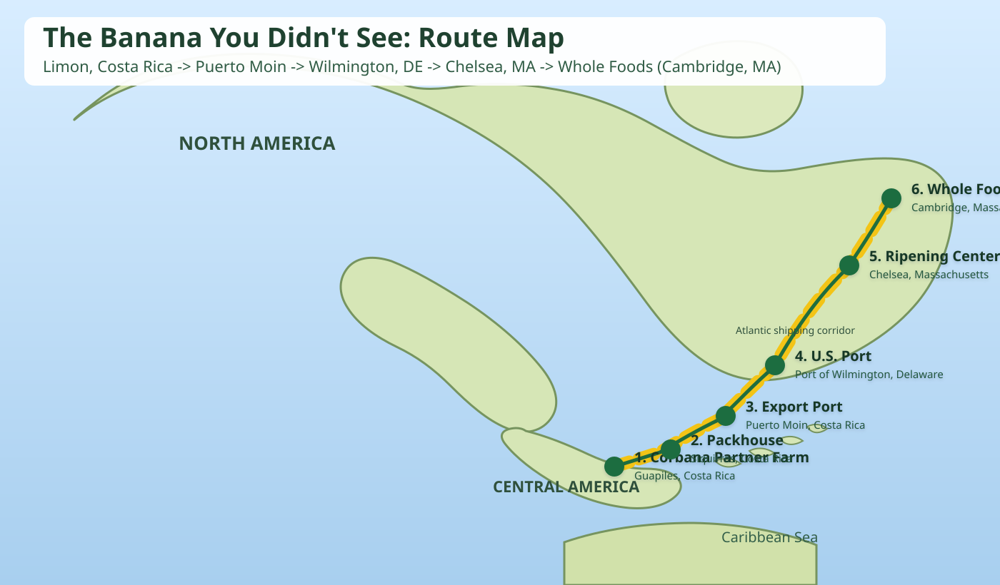

Meet Your Banana
Origin: Limon Province, Costa Rica
Farm: Corbana Partner Farm (Limon)
Harvested: March 12, 2026
Arrived In Store: March 29, 2026
Farm Snapshot
Photos from the Costa Rica farm environment where this banana journey begins.



Journey Map
Tap each step to see what happened before this banana reached your cart.

Farm (Corbana partner farm, Limon Province): Bananas are harvested near Guapiles and tagged for traceability.
Who Would You Thank?
From growers to store teams, this banana reached you through many hands.
0 shared messages today
Quick Reflection
How many people do you think touched this banana before it reached this shelf?
Most bananas involve many roles across farming, packing, transport, and retail.